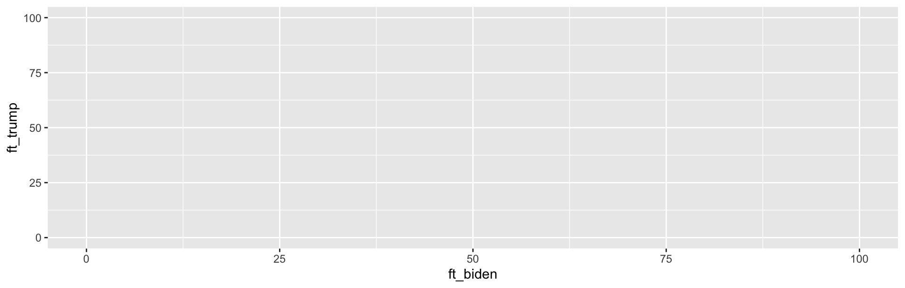
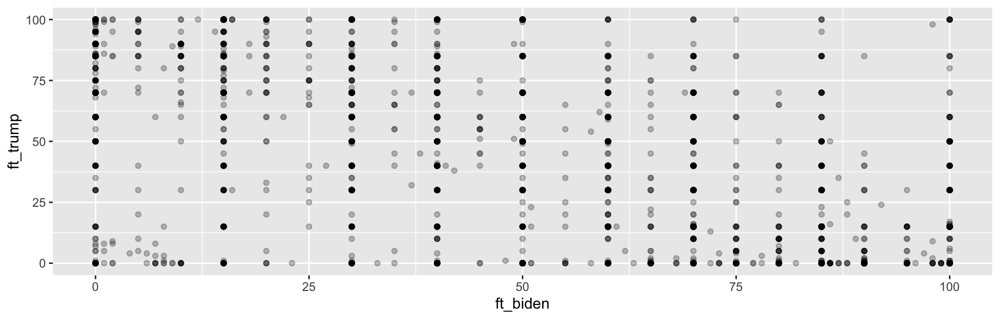
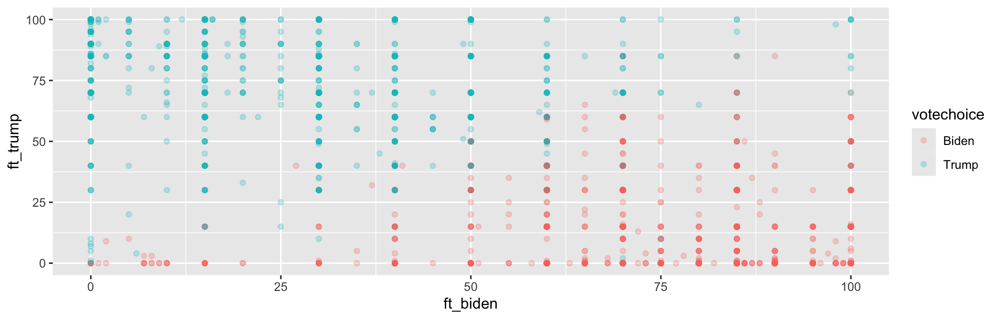
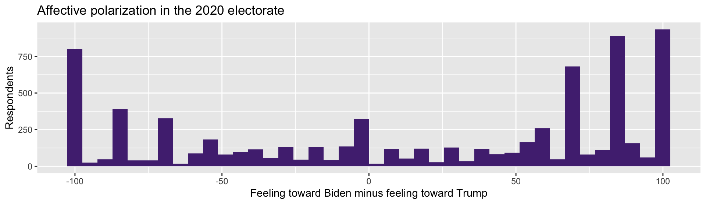
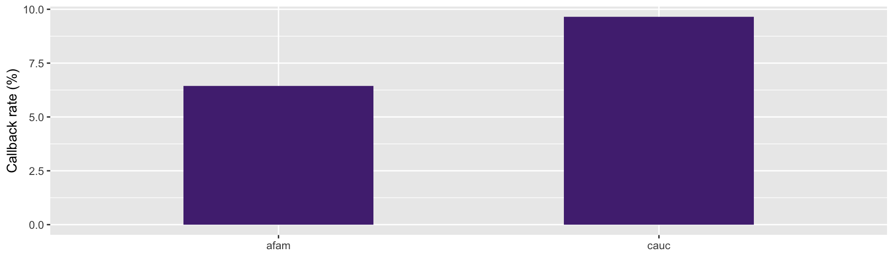

Quarto, Data Manipulation, and plots
Tuesday you loaded real data and looked at it
Today we will change it, summarize it, and plot it
We’ll finish by rebuilding the résumé figure from Week 1
Reinhart and Rogoff (2010) reported that economic growth falls sharply once government debt passes 90% of GDP
The finding was cited constantly in arguments for austerity after 2008
In 2013 a graduate student trying to replicate it found a spreadsheet error: several countries had simply been left out of a formula’s range
The corrected numbers looked materially different. Nobody caught it for three years, because nobody could see the analysis.
The usual workflow: run code → copy a number → paste it into Word
Then you fix a data error and rerun. Which numbers in the document are now stale?
Six months later a reviewer asks where Table 3 came from. Can you say?
This is not [only] about virtue. It is about being able to trust your own results.
A single file (.qmd) that holds your writing and your code together
You render it, and Quarto:
runs every chunk in order, in a clean session
drops the results, numbers, tables, figures, into the finished document
Change the data, re-render, everything updates
Your problem sets will be .qmd files. I recommend writing your final project (and journal articles) in quarto.
Three parts:
---
title: "My Analysis"
format: html
---
Here is ordinary text. **Bold** with asterisks.
```{r}
mean(anes$ft_biden, na.rm = TRUE)
```
More text explaining what that number means.YAML header between the --- lines: settings
Text: written in Markdown
Code chunks: opened with ```{r}
Hit Preview. Quarto runs everything and produces an HTML file.
Critically: it runs in a fresh session
“But it worked in the console!” - ok but will it reproduce later?
If it does not render, it is not done.
File → New File → Quarto Document. Save it as week2.qmd in your class folder.
Delete the template junk below the YAML header.
Add a code chunk that loads the tidyverse and reads the ANES.
Add a sentence of text above it saying what the chunk does.
Render.
If you get an error about not finding the file, you already know what is wrong.
Suppose we want the mean Biden thermometer among people who voted.
To read that, you start in the middle and work outward. Now imagine four more steps.
|> takes the thing on its left and feeds it to the function on its right.
Read |> as “and then”: take the ANES, and then keep voters, and then grab that column, and then average it.
filter() — keep some rows
select() — keep some columns
mutate() — add a new column
arrange() — sort the rows
group_by() + summarise() — collapse to one row per group
This will get you 75% of the way there
Note ==, not =.
== checks for equality, = makes an assignment.
| Operator | Means |
|---|---|
== / != |
equals / does not equal |
> < >= <= |
greater / less than |
& / | |
and / or |
is.na() |
is missing |
Commas separate conditions.
How many respondents voted for Trump?
How many Trump voters rate BLM (ft_blm) above 50?
How many respondents are missing a value for votechoice? (hint: is.na())
# A tibble: 3 × 3
votechoice ft_biden ft_trump
<chr> <dbl> <dbl>
1 <NA> 0 100
2 Other 15 15
3 Biden 85 0Useful when a dataset has 350 columns and you care about a few.
Let’s build an actual measure. Affective polarization is often operationalized as how much warmer you feel toward your side than the other side.
anes <- anes |>
mutate(affect_gap = ft_biden - ft_trump)
anes |>
select(votechoice, ft_biden, ft_trump, affect_gap) |>
head()# A tibble: 6 × 4
votechoice ft_biden ft_trump affect_gap
<chr> <dbl> <dbl> <dbl>
1 <NA> 0 100 -100
2 Other 15 15 0
3 Biden 85 0 85
4 Biden 100 60 40
5 Trump 0 90 -90
6 Biden 100 0 100affect_gap runs from -100 (loves Trump, hates Biden) to +100 (the reverse)
Zero means indifferent between the two
We did not download this variable. We constructed it from a definition.
This is measurement. It is a choice you have to defend. Why the difference and not the ratio? Why these two thermometers? Reasonable people argue about this (I’m one of them).
anes |>
filter(!is.na(votechoice)) |>
group_by(votechoice) |>
summarise(mean_police = mean(ft_police, na.rm = TRUE)) |>
arrange(desc(mean_police))# A tibble: 3 × 2
votechoice mean_police
<chr> <dbl>
1 Trump 85.3
2 Biden 62.2
3 Other 61.6desc() for descending. A 23-point gap in warmth toward the police.
This is the one that does the most work.
anes |>
filter(!is.na(votechoice)) |>
group_by(votechoice) |>
summarise(
n = n(),
mean_biden = mean(ft_biden, na.rm = TRUE),
mean_trump = mean(ft_trump, na.rm = TRUE)
)# A tibble: 3 × 4
votechoice n mean_biden mean_trump
<chr> <int> <dbl> <dbl>
1 Biden 3267 81.6 5.35
2 Other 151 41.3 28.3
3 Trump 2463 18.1 82.5 Biden voters rate Biden 81.6 and Trump 5.4
Trump voters rate Trump 82.5 and Biden 18.1
Near-perfect mirror images
Four lines of code, and you have measured affective polarization in the 2020 electorate. Data Analysis isn’t so bad, right?
| Function | Gives you |
|---|---|
n() |
number of rows in the group |
mean() / median() |
center |
sd() |
spread |
min() / max() |
range |
sum(x > 50) |
count meeting a condition |
Nearly all of them need na.rm = TRUE on real data.
Using group_by() and summarise():
What is the mean affect_gap for each votechoice group?
Add the number of people in each group with n()
Add the standard deviation of affect_gap. Which group is more internally divided?
A ggplot is built from three things:
Data — the data frame
Aesthetics — which variable maps to which visual channel (x, y, color, size)
Geometry — what marks to draw (points, bars, lines)
You add layers with +. Note: + for plots, |> for data. Mixing them up is the most common ggplot error.
Nothing. We have not said what to draw.

Now there are axes — R knows the ranges. Still nothing drawn.

alpha makes points transparent, so we can see where they pile up.

| Geom | For |
|---|---|
geom_point() |
two continuous variables |
geom_histogram() |
distribution of one variable |
geom_col() |
a bar per group (you supply the height) |
geom_boxplot() |
distribution across groups |
geom_density() |
smoothed distribution |

Make a histogram of ft_police
Make it a different color
Add axis labels and a title with labs()
Harder: make a boxplot of ft_police with votechoice on the x-axis
Week 1, the Bertrand and Mullainathan callback rates. You now know every verb needed to build it.
Load resumes-2.csv
Make a column that is TRUE when the résumé got a callback
Group by ethnicity
Summarise to a callback rate
Plot it with geom_col()
Try it before you look at the next slide.

Five verbs and one plot got you a published result
Week 1 you watched me show you that figure. Today you made it.
Everything from here is about what the numbers mean
Problem Set 1 goes out today, due Friday, September 4. It is a .qmd. It must render.
Read: R4DS Chapter 3 (Data Transformation)
Read: R4DS Chapter 9 (Layers) for more on ggplot
Adcock and Collier (2001), “Measurement Validity: A Shared Standard for Qualitative and Quantitative Research”, APSR
Where numbers come from, and how to argue about whether they measure what you claim
Note their framing: measurement validity is a standard that applies to qualitative work too
Healy, Data Visualization, Chapter 1 (“Look at Data”) — free at https://socviz.co